Waste collection partners
Hotels, juice stalls, coconut vendors and restaurants looking to channel discarded coconut biomass toward reuse.
Every discarded coconut holds possibility. We’re building a Goa-first ecosystem that turns yesterday’s waste into tomorrow’s materials and everyday essentials.

/ THE BIG PICTURE
After the water is gone, a coconut’s story shouldn’t end in a landfill. Across Goa, husks and shells are often discarded despite their potential as useful raw materials.
CocoCycle is a proposed collection, processing and product-development ecosystem connecting waste generators with makers, businesses and conscious consumers.
See how the cycle works ↗
Working toward cleaner collection streams, more useful coconut materials and a circular economy designed around local partnerships.
Join the pilot conversation ↗/ DISCOVER THE POSSIBILITIES
Explore future CocoCycle product lines. These are concepts for interest gathering, not products currently available for purchase.
/ FOR BUSINESS
From coconut waste generators to sustainable material buyers, we’re building partnerships across the value chain.
Hotels, juice stalls, coconut vendors and restaurants looking to channel discarded coconut biomass toward reuse.
Manufacturers, nurseries, agricultural and industrial businesses exploring processed coconut-based inputs.
Resorts, colleges, corporates and event teams seeking considered sustainable merchandise and gifting options.
Interested in collaborating on a pilot?
Request a B2B conversation ↗/ THE COCOCYCLE LOOP
An intentional system designed to capture value at every stage of the coconut’s second life.
Work with vendors, hotels and tourism businesses to aggregate coconut discards.
Sort, clean, dry and size-reduce incoming biomass according to end use.
Develop material streams and prototype products through appropriate processes.
Connect useful materials and products with commercial and consumer buyers.
/ TRANSPARENT PILOT THINKING
Explore an illustrative Goa pilot cost model. Change throughput or monthly costs to see how the operating cost per incoming kilogram changes.
Matches the ₹20.00 baseline
Monthly operating cost ÷ incoming kilograms processed
Baseline collection: ₹4/kg; other operating costs: ₹16/kg at 3,000 kg/month. These components are not automatically recalculated when changing the calculator assumptions.
Important: This is an educational planning model, not verified quotations or a profitability forecast. ₹20/kg applies to incoming waste, not finished product; excludes depreciation, financing, product yield, sales and taxes. The operating-cost breakdown reflects only the original ₹60,000 baseline.
/ OUR NORTH STAR
We envision a scalable, circular coconut economy—where discarded husks and shells can become a resource for makers, businesses and communities.
Be part of the cycle ↗/ LET’S TALK
Whether you’re exploring sustainable products, buying materials, supplying coconut waste or building a collaboration, we’d love to hear from you.